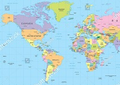
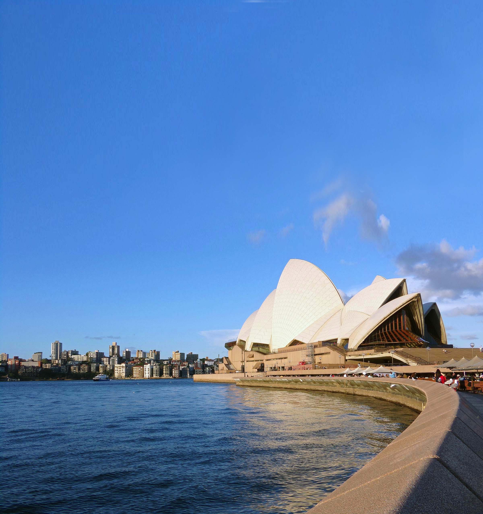

Travel Photo Album
Welcome to my photography website! During the recent years, I was able to travel to several countries, most in Latin America, some of them overseas. In every journey I learned so much about the world, and maybe that's why I travel: to keep on learning. This are the stills of some of this moments. Hope you like it!
